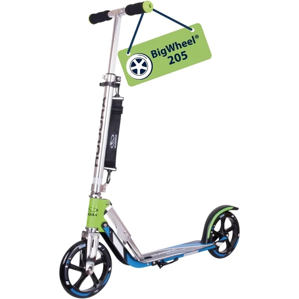
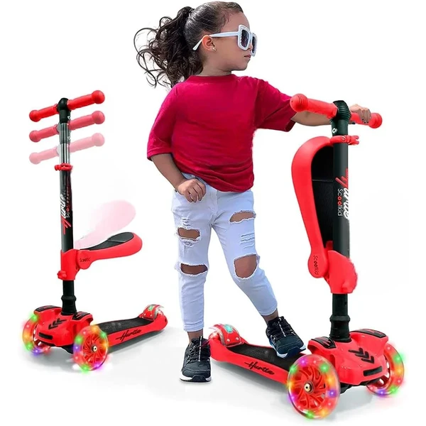
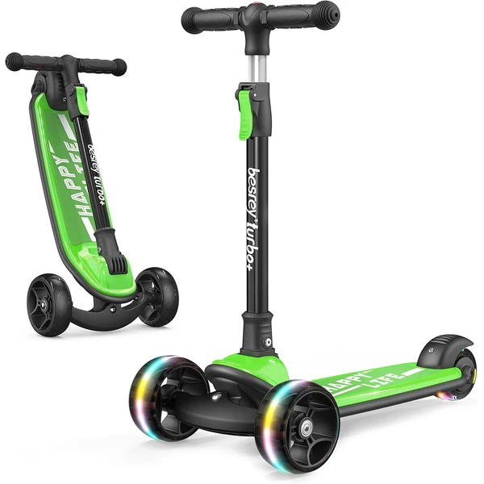
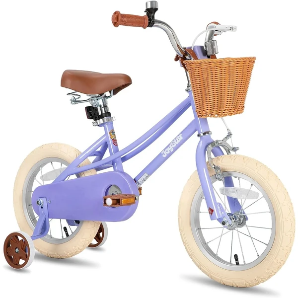
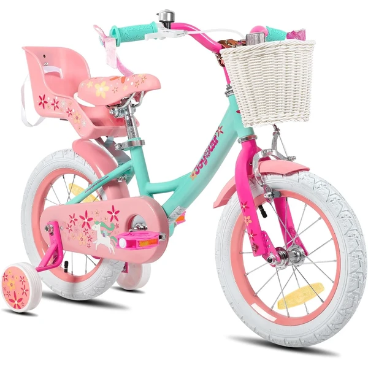
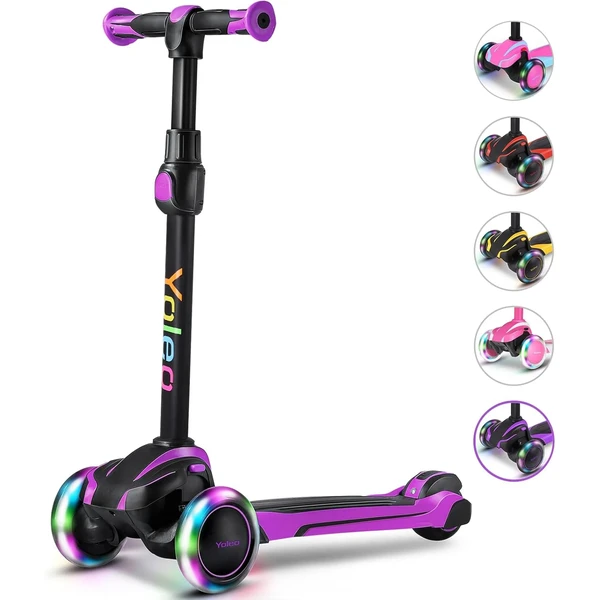
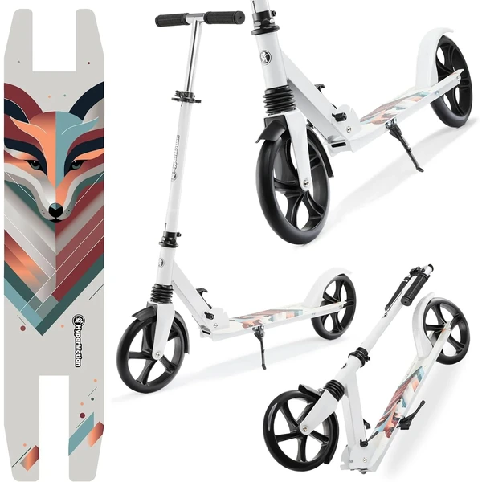
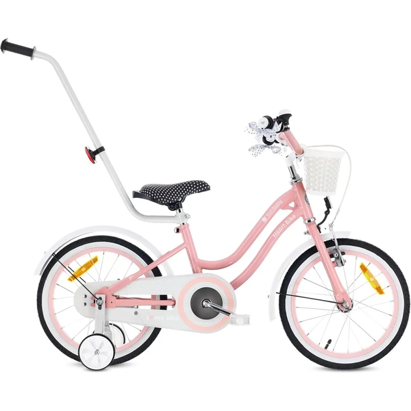
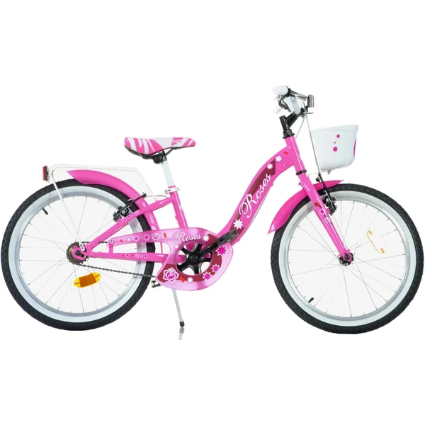
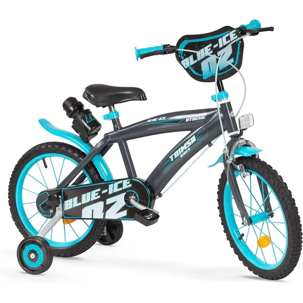

Hudora Big Wheel Scooter
Un patinete de aluminio con ruedas grandes de 205 mm, ajustable en altura entre 79 y 104 cm y plegable para transportar con facilidad. Soporta hasta 100 kg, por lo que crece con el niño durante años.
⭐ ¿Por qué nos gusta?
- ✔ Ruedas grandes de 205 mm para más velocidad.
- ✔ Ajustable en altura y plegable para guardar.
- ✔ Solo pesa 4 kg, muy fácil de transportar.
💬 Lo que más destacan las familias
Quienes lo han comprado destacan lo ligero que resulta, algo que se nota especialmente cuando hay que cargarlo entre casa y el parque. También se valora que el manillar ajustable permita que dure varios años.
Ver en Amazon

Hurtle Patinete 2 en 1
Un patinete con asiento plegable que permite alternar entre ir sentado o de pie. Incluye ruedas con luces LED intermitentes y manillar ajustable para acompañar el crecimiento del niño.
⭐ ¿Por qué nos gusta?
- ✔ Asiento plegable: 2 en 1, sentado o de pie.
- ✔ Ruedas con luces LED intermitentes.
- ✔ Manillar ajustable en varias alturas.
💬 Lo que más destacan las familias
Muchos padres coinciden en que el asiento plegable es un acierto para los trayectos más largos, cuando las piernas ya están cansadas. Las luces LED de las ruedas también gustan mucho a los niños.
Ver en Amazon

Lionelo Luca Patinete Urbano XXL
Un patinete con ruedas grandes de 200 mm y amortiguación en el manillar para reducir las vibraciones del terreno. Se pliega rápidamente y pesa solo 4,1 kg, ideal para llevarlo a cualquier sitio.
⭐ ¿Por qué nos gusta?
- ✔ Amortiguación ShockResist en el manillar.
- ✔ Ruedas grandes de 200 mm, mayor velocidad.
- ✔ Plegado rápido y muy ligero, 4,1 kg.
💬 Lo que más destacan las familias
Entre los comentarios más habituales aparece lo suave que resulta circular gracias a la amortiguación del manillar. Se agradece especialmente en aceras irregulares o adoquinadas.
Ver en Amazon

Besrey Patinete Big Wheels
Un patinete de tres ruedas con luces LED intermitentes y plegado en solo 3 segundos. Su base ancha y diseño de dirección por inclinación ayudan a desarrollar el equilibrio de forma segura.
⭐ ¿Por qué nos gusta?
- ✔ Tres ruedas para mayor estabilidad.
- ✔ Plegado en solo 3 segundos.
- ✔ Dirección por inclinación, desarrolla el equilibrio.
💬 Lo que más destacan las familias
Una de las cosas que más se repite es la estabilidad que dan las tres ruedas a los que se inician en el patinete. El plegado rápido también se menciona como un punto a favor para guardarlo sin complicaciones.
Ver en Amazon

Dino Bikes Unicornio 16 Pulgadas
Una bicicleta de 16 pulgadas con temática de unicornio, ruedas neumáticas y estabilizadores desmontables. El sillín y el manillar son ajustables para acompañar el crecimiento del niño.
⭐ ¿Por qué nos gusta?
- ✔ Estabilizadores desmontables incluidos.
- ✔ Ruedas neumáticas para mayor confort.
- ✔ Sillín y manillar ajustables.
💬 Lo que más destacan las familias
Lo que más suele gustar es la temática de unicornio, que enamora a las niñas nada más verla. Los estabilizadores desmontables se valoran porque acompañan bien el aprendizaje sin pedales.
Ver en Amazon

Joystar Bicicleta con Cesta
Una bicicleta disponible en varias medidas según la edad, con cesta delantera y estabilizadores incluidos. Viene montada en un 85%, dejando solo detalles finales por instalar.
⭐ ¿Por qué nos gusta?
- ✔ Disponible en varias tallas según la edad.
- ✔ Incluye cesta y estabilizadores.
- ✔ Viene montada en un 85%.
💬 Lo que más destacan las familias
Una característica muy mencionada es que viene casi lista para montar, con muy pocos pasos por completar. Los padres agradecen poder elegir el tamaño exacto según la altura de cada niño.
Ver en Amazon

Joystar Bicicleta Unicornio
Una bicicleta con temática de unicornio disponible en varias medidas, con asiento para muñeca, cesta y ruedas estabilizadoras. Freno de mano delantero para una conducción más segura.
⭐ ¿Por qué nos gusta?
- ✔ Incluye asiento para muñeca.
- ✔ Cesta y ruedas estabilizadoras incluidas.
- ✔ Freno de mano delantero para más seguridad.
💬 Lo que más destacan las familias
Los compradores valoran especialmente el detalle del asiento para muñeca, que convierte cada paseo en un juego. También se menciona que el freno de mano da más confianza a los más pequeños.
Ver en Amazon

YOLEO Patinete de 3 Ruedas
Un patinete de tres ruedas con estructura triangular estable y ruedas que se iluminan con colores intermitentes. El manillar se ajusta en 4 alturas distintas para acompañar el crecimiento.
⭐ ¿Por qué nos gusta?
- ✔ Estructura triangular estable, evita vuelcos.
- ✔ Ruedas con luces de colores intermitentes.
- ✔ Manillar ajustable en 4 alturas.
💬 Lo que más destacan las familias
No es raro encontrar comentarios sobre lo estable que resulta gracias a su base triangular, ideal para quienes todavía están cogiendo soltura. Las luces de las ruedas son otro de los detalles que más se menciona.
Ver en Amazon

Stitch Manchi Bicicleta Infantil
Una bicicleta con temática de Stitch y portaequipajes especial para llevar muñecas u otros juguetes. Disponible en varias medidas, con estabilizadores para aprender a montar y frenos de mano duales.
⭐ ¿Por qué nos gusta?
- ✔ Portaequipajes para muñecas y juguetes.
- ✔ Estabilizadores para aprender a montar.
- ✔ Frenos de mano duales para más seguridad.
💬 Lo que más destacan las familias
Se repite bastante el comentario de que el portaequipajes es un detalle diferente y muy útil para llevar juguetes durante el paseo. Los fans de Stitch quedan encantados con el diseño.
Ver en Amazon

Sawyer Bikes Patinete Ajustable
Un patinete que llega listo para usar sin necesidad de montaje, con manillar ajustable en tres posiciones y suspensión delantera para circular con suavidad por distintos terrenos.
⭐ ¿Por qué nos gusta?
- ✔ Se entrega ya montado, listo para usar.
- ✔ Suspensión delantera para mayor comodidad.
- ✔ Manillar ajustable en tres posiciones.
💬 Lo que más destacan las familias
Los padres que ya lo han probado cuentan que llega totalmente montado y listo para usar, sin perder tiempo con herramientas. La suspensión delantera también se valora en superficies irregulares.
Ver en Amazon

HyperMotion Patinete Ruedas Grandes
Un patinete con ruedas grandes de 200 mm y amortiguación delantera, pensado específicamente para esta edad en adelante. El manillar en T es ajustable y los puños son extraíbles para guardarlo mejor.
⭐ ¿Por qué nos gusta?
- ✔ Ruedas grandes de 200 mm.
- ✔ Amortiguación delantera incluida.
- ✔ Puños extraíbles y plegables para guardar.
💬 Lo que más destacan las familias
Un detalle que aparece una y otra vez en las opiniones es que el tamaño resulta más adecuado que otros patinetes pensados para niños más pequeños. La amortiguación delantera también se menciona como un buen extra.
Ver en Amazon

Sun Baby Heart Bike
Una bicicleta infantil con ruedines, barra de empuje desmontable y freno contrapedal más V-Brake. Incluye cesta y timbre, ideal para paseos y para acompañar los primeros pedaleos.
⭐ ¿Por qué nos gusta?
- ✔ Barra de empuje para guiar al niño.
- ✔ Doble sistema de frenado para más seguridad.
- ✔ Incluye cesta y timbre.
💬 Lo que más destacan las familias
Algo que se repite mucho es lo útil que resulta la barra de empuje mientras el niño coge confianza pedaleando. El doble sistema de frenado también da tranquilidad a los padres.
Ver en Amazon

SCH Bicicleta Roses
Una bicicleta de 20 pulgadas con estructura robusta de acero, pensada para esta edad y alturas entre 120 y 155 cm. Un modelo sencillo y resistente para el uso diario.
⭐ ¿Por qué nos gusta?
- ✔ Estructura robusta de acero.
- ✔ Tamaño de rueda adecuado para esta edad.
- ✔ Diseño sencillo y resistente.
💬 Lo que más destacan las familias
Se nota en las opiniones que es una bicicleta sencilla y sin complicaciones, justo lo que buscan quienes quieren un modelo resistente para el día a día. El tamaño de las ruedas encaja bien con esta edad.
Ver en Amazon

Toimsa Bicicleta Blue Ice
Una bicicleta de 16 pulgadas con ruedines para mayor estabilidad, portanúmero delantero y portabidón trasero. Un modelo sencillo pensado para alturas entre 105 y 115 cm.
⭐ ¿Por qué nos gusta?
- ✔ Ruedines incluidos para más estabilidad.
- ✔ Incluye portanúmero y portabidón.
- ✔ Tamaño adecuado para alturas de 105-115 cm.
💬 Lo que más destacan las familias
Entre las familias que lo tienen se comenta que los ruedines dan mucha seguridad en los primeros pedaleos. Los detalles como el portabidón se valoran como un plus simpático para los más pequeños.
Ver en Amazon